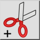

Kivágás referenciával
Eszköztár / ikon:


Menü: Szerkesztés > Kivágás referenciával
Rövidítések: Ctrl+Shift+X (Mac: ⇧⌘X) | R, T
Parancsok: cutwithreference | rt
Ez egy automatikus fordítás.
Eszköztár / ikon:


A Kivágás referenciával eszköz úgy működik, mint a Másolás referenciával eszköz, azzal az egyetlen különbséggel, hogy a kijelölt elemek eltávolításra kerülnek az aktuális rajzból, miután a vágólapra másolták őket.